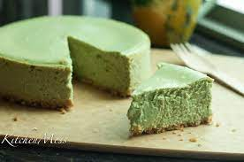

Matcha cheesecake

A rich but earthy cheesecake that is a delight to the tastebuds
This recipe is one that I took from a site online and tweaked when I messed up preparing it originally.
The consistency is a bit more loose than the japanese cheesecake but less dense than a New York Cheescake
Overall, the cheesecake went over well and it was a good learning experience.
If you are looking for a cheesecake that is more matcha flavor than other matcha cheesecakes
you've tried, then this recipe is for you.
Ingredients you'll need
- 2 x 8oz packages of fat-free cream cheese
- 2 eggs
- 1/2 cup white sugar
- 2 tablespoons of matcha powder
- 1 tablespoon of vanilla extract (to taste)
- 1/4 cup of sour cream
- 10 graham cracker sheets for the crust
- 6 tablespoons of salted butter for the crust
Instructions
- Preheat the oven to 350F.
- Make the crust by crushing 10 graham cracker sheets until it is a crumb like consistency.
- Melt 8 tablespoons of butter and then combine with the graham cracker sheets.
- Line a 8-inch springform pan and compress with the bottom of a glass until it coats
the bottom of the pan and goes up the sides a little.
- In a separate bowl combine the room temperature cream cheese and sugar until well combined.
- To the cream cheese mixture, add eggs one at a time. Mix after adding each egg until well incorporated.
- Add the matcha powder, vanilla, and sour cream to the mixture and beat until smooth.
- Pour batter into springform pan with graham cracker crust.
- Level the top of the cheesecake and wrap the bottom of the pan with aluminum foil and plastic cling film
- Add water to baking sheet and place cheesecake until water bath
- Bake until the center of the cheesecake is mostly set but has a slight jiggle. (usually around 25 minutes).
For the last 10 minutes, cover the top with aluminum foil to prevent excessive browning on the top.
- Let cool for at least 1-2 hours before serving.
- Optional: Add whipped cream to each slice when serving.